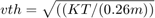
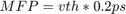
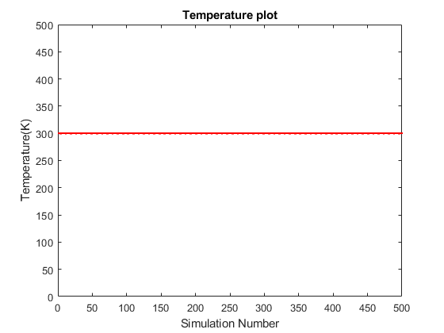
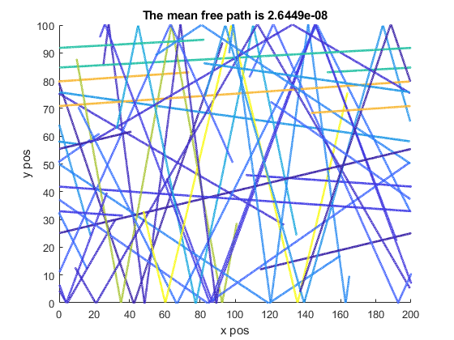

Electron Modelling - Part 1
Contents
Question 1
The purpose of this code is to simulate electrons in an N type Si semiconductor crystal. The electrons bounce off the y axis. As for the x-axis, they go through the x axis and appear on the opposite side.
global C C.q_0 = 1.60217653e-19; % electron charge C.hb = 1.054571596e-34; % Dirac constant C.h = C.hb * 2 * pi; % Planck constant C.m_0 = 9.10938215e-31; % electron mass C.kb = 1.3806504e-23; % Boltzmann constant C.eps_0 = 8.854187817e-12; % vacuum permittivity C.mu_0 = 1.2566370614e-6; % vacuum permeability C.c = 299792458; % speed of light C.g = 9.80665; %metres (32.1740 ft) per s² nSim = 500; noe = 20; r2 = randi(360,noe,1); xbound = 200; ybound = 100; x = randi(200,noe,1); y = randi(100,noe,1);
Thermal Velocity
The thermal velocity is calculate using the below equation which is

The mean free path is simply

vth = sqrt((C.kb * 300)/(C.m_0 * 0.26)); vx = vth * cos(r2) ; vy = vth * sin(r2); MFP = vth * 0.2 * 10^-12; colourArray = rand(noe,1); for n = 1:nSim %Reflecting for y bounds% temp = y >= ybound ; temp1 = y < ybound ; temp = temp * -1; tempHigher = temp + temp1; temp2 = y <= 0; temp3 = y > 0; temp2 = temp2 * -1; tempLower = temp2 + temp3; vy = vy .* tempHigher; vy = vy .* tempLower; %%%%%%%%%%%%%%%%%%% % when x > 200%%%%% tempx1 = x <= 200; x = x .* tempx1; %%%%%%%%%%%%%%%%%% %%When x goes less than zero , come from 200 %%%%% tempx2 = x < -0.1; tempx2 = tempx2 * 200; tempxFinal = x + tempx2; x = tempxFinal; %%%%%%%%%%%%%%%%%%% dx = vx * (1/200000); dy = vy * (1/200000); x = x + dx; y = y + dy; vsq = (vy).^2 + (vx).^2 ; average = mean(vsq); semiCTemperature = (average *(0.26)* C.m_0)/(C.kb); figure(1) plot(n , semiCTemperature,'.r') title("Temperature plot"); xlabel("Simulation Number") ylabel("Temperature(K)") axis([0 nSim 0 500]); hold on figure(2) scatter(x,y,3,colourArray); axis([0 200 0 100]); xlabel("x pos") ylabel("y pos") title("The mean free path is " + MFP); hold on; pause(0.01); end 